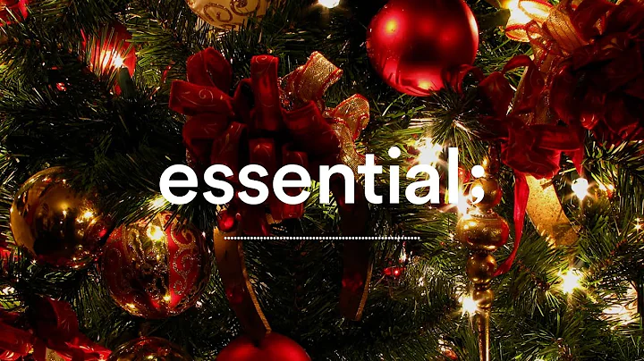
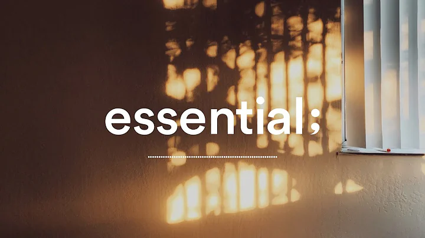
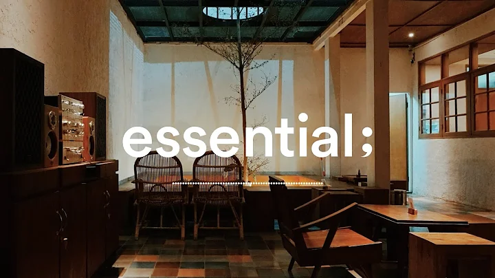

Youtube
#Playlist
#music
#christmas
[Playlist] 슬슬 연말 분위기를 내볼까요? | 퍼펙트 크리스마스 캐롤 플레이리스트🎄🎅🎁 | Best Christmas Pop Songs Of All Time
1M views 1 month ago
1K
0
Share
Save
Report
송이 by 옥진
1M subscrivers
subscribe

====[Playlist] 슬슬 연말 분위기를 내볼까요?====
퍼펙트 크리스마스 캐롤 플레이리스트
82k views

====[Playlist] 손끝으로 느껴지는 나른한 오후====
afternoon cozy pop
78k views

=====[Playlist] 독서의 계절 편안한 분위기의 힐링 재즈 연주====
relaxing autumn jazz instrumental
94k views